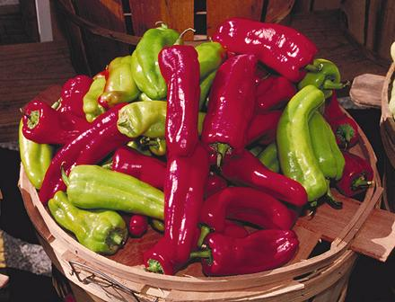

Cubanelle Chili / Italian Frying Pepper

[Capsicum annuum]
This Chili is said to have been brought from southern Italy in 1887,
and is now very much favored in Puerto Rico, the Dominican Republic,
and Cuba. They are called for in many recipes, but are not at all available
here in Southern California, and in many other regions of North America,
so substitutions must be made. Cubanelles are usually very mild, solidly
within hotness H1, but they can
occasionally get to the high end of
H2. They are usually harvested while still yellow-green, but turn
bright red if allowed to ripen fully. They have rather thin skins and thin
walls, and grow to about 6 inches long.
Photo by United States Department of Agriculture = public
domain.
Substitutions:
Here in Southern California, we can use
sweet Hungarian or Armenian / Turkish peppers when available. When they are
not, I buy a bag of Mini Peppers and
use 3 to 4 times the number called for. This works quite well, but sometimes
a little hot chili added with them is good, as they tend to be very mild.
Otherwise half an Anaheim (thicker walls, a little more heat). Green bell
pepper would be a very distant choice, (very thick walls, strong flavor and
thick skins). For Anaheims or Bell Peppers I would blast the skins with my
Kitchen Torch and brush them off
under running water.
More on Chilis.
cp_cubanz 210221 - www.clovegarden.com
©Andrew Grygus - agryg@clovegarden.com - Photos
on this page not otherwise credited © cg1
- Linking to and non-commercial use of this page permitted